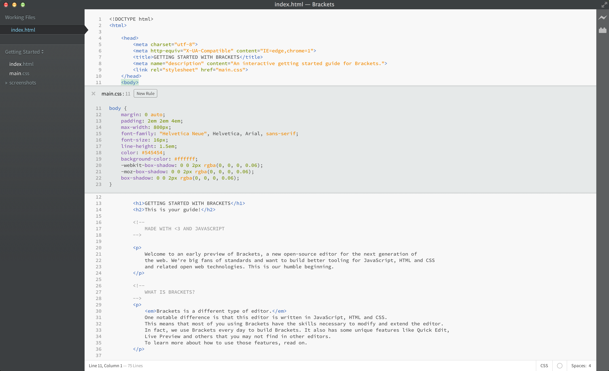

Selamat datang di Brackets, sebuah editor modern dan open-source yang dirancang untuk mendesain web. Ringan namun bertenaga, editor ini memadukan perangkat visual ke dalamnya sehingga Anda memiliki perangkat yang tepat ketika Anda membutuhkannya.
Brackets berbeda dari editor lainnya. Brackets memiliki fitur-fitur yang unik seperti Edit Cepat, Tinjauan Langsung dan berbagai macam fitur yang mungkin tidak Anda temui di editor lain. Brackets dikembangkan dengan JavaScript, HTML and CSS. Ini berarti Anda, para pengguna Brackets sudah memiliki kemampuan untuk memodifikasi dan memperluas editor ini. Bahkan, kami menggunakan Brackets setiap hari dalam pengembangan Brackets. Untuk mempelajari cara penggunaan fitur-fitur utama yang ada di dalam Brackets, baca lebih lanjut.
Untuk mengedit kode Anda sendiri dengan menggunakan Brackets, Anda bisa langsung membuka folder yang berisi file-file Anda. Brackets memperlakukan folder yang sedang dibuka sebagai "proyek"; fitur-fitur seperti Petunjuk Kode, Tinjauan Langsung and Edit Cepat hanya menggunakan file-file yang ada di dalam folder yang sedang dibuka.
Saat Anda siap untuk keluar dari proyek contoh ini dan mengedit kode Anda sendiri, Anda dapat menggunakan dropdown yang ada di sisi kiri sidebar untuk mengganti folder. Saat ini, dropdown Anda menunjukkan "Memulai"- itu adalah folder yang berisi file yang Anda lihat saat ini. Klik pada dropdown dan pilih "Buka Folder…" untuk membuka folder Anda sendiri. Anda juga bisa menggunakan dropdown nanti untuk berpindah ke folder yang telah Anda buka sebelumnya, termasuk proyek contoh ini.Tidak perlu lagi repot-repot berpindah dari satu dokumen ke dokumen lainnya. Ketika mengedit HTML, gunakan pintasan Cmd/Ctrl + E untuk membuka Edit Cepat yang menampilkan semua CSS yang sesuai. Ubah CSS Anda, kemudian tekan ESC dan Anda kembali lagi mengedit HTML, atau tetap buka CSS Anda dan kotak tersebut akan menjadi satu dengan editor Anda. Jika Anda menekan ESC diluar kotak Edit Cepat, semuanya akan langsung disembunyikan. Edit Cepat juga akan menemukan aturan dalam file LESS dan SCSS, termasuk aturan bersarang.
Mau lihat cara kerjanya? Tempatkan kursor Anda di tag di atas kemudian tekan Cmd/Ctrl + E. Anda akan melihat editor cepat CSS muncul, menunjukkan aturan CSS yang sesuai. Edit Cepat juga dapat digunakan untuk atribut class dan id. Anda juga bisa menggunakannya dengan file LESS dan SCSS. Anda bisa membuat aturan baru dengan cara yang sama. Klik salah satu tag di atas dan tekan Cmd/Ctrl + E. Saat ini tidak ada aturan untuk tag itu, namun Anda bisa klik tombol Aturan Baru untuk menambahkan aturan untuk . Anda juga bisa menggunakan pintasan yang sama untuk mengedit hal-hal lainnya - seperti fungsi di JavaScript, warna, dan fungsi animasi - dan kami terus menambahkan fitur lain setiap saat.
Saat ini, editor inline tidak dapat disarangkan, sehingga Anda hanya dapat menggunakan Edit Cepat ketika berada dalam mode "ukuran penuh".
Anda tahu mengenai teknik "simpan/muat ulang" yang sering kita lakukan? Dimana kita mengubah file, kemudian kita simpan, lalu pindah ke peramban dan memuat ulang halaman untuk melihat hasilnya? Dengan Brackets, Anda tidak perlu melakukannya lagi.
Brackets akan membuka sambungan langsung ke peramban Anda dan memperbarui HTML dan CSS secara langsung, bahkan ketika Anda mengetik! Mungkin Anda sudah pernah melakukan hal ini dengan perangkat dari peramban, namun dengan Brackets, Anda tidak perlu lagi menyalin kode kembali ke editor. Kode Anda berjalan di peramban, namun tetap berada di editor Anda!
Brackets mempermudah Anda melihat bagaimana perubahan pada HTML dan CSS yang Anda buat akan mempengaruhi halaman. Ketika kursor Anda berada pada aturan CSS, Brackets akan menyoroti semua elemen yang dipengaruhi pada peramban. Hal yang sama ketika mengedit file HTML, Brackets akan menyoroti elemen HTML yang sesuai pada peramban.
Jika Anda menggunakan Google Chrome, Anda bisa mencoba ini sendiri. Klik pada ikon petir di sebelah kanan atas pada jendela Brackets Anda atau tekan Cmd/Ctrl + Alt + P. Ketika Tinjauan Langsung dijalankan di dokumen HTML, semua dokumen CSS yang terhubung bisa diedit secara langsung. Ikon petir akan berubah warna dari abu-abu menjadi emas ketika Brackets mendapatkan sambungan ke peramban Anda. Sekarang, tempatkan kursor Anda di tag di atas. Perhatikan sorotan warna biru yang muncul di sekeliling gambar pada Chrome. Lalu, tekan Cmd/Ctrl + E untuk membuka aturan CSS yang ada. Cobalah ubah ukuran border dari 10px ke 20px atau ubah warna background dari "transparent" ke "hotpink". Jika Brackets dan peramban berjalan berdampingan, Anda akan dapat melihat perubahannya secara langsung di peramban Anda. Keren, kan?Saat ini, Brackets hanya mendukung Tinjauan Langsung untuk HTML dan CSS. Namun di versi ini, perubahan terhadap JavaScript akan dimuat ulang ketika Anda menyimpan. Saat ini kami berusaha menambahkan dukungan Tinjauan Langsung untuk JavaScript. Tinjauan Langsung juga hanya bisa dijalankan di peramban Google Chrome, namun kami berharap untuk memberikan fitur ini ke semua peramban di masa depan.
Bagi Anda yang belum hafal nilai RGB dan HEX sebuah warna, dengan Brackets, Anda dapat dengan mudah dan cepat untuk melihat warna apa saja yang sedang digunakan. Di CSS atau HTML, tempatkan kursor di atas nilai warna atau gradien dan Brackets akan menampilkan warna/gradien tersebut secara otomatis. Sama halnya dengan gambar: taruh kursor di atas link gambar pada editor Brackets dan menampilkan thumbnail dari gambar tersebut.
Untuk mencobanya sendiri, tempatkan kursor Anda pada tag di atas dokumen ini dan tekan Cmd/Ctrl + E untuk membuka editor cepat CSS. Setelah itu, tempatkan kursor di atas nilai warna apapun di dalam CSS tersebut. Anda juga bisa mencoba sendiri untuk gradien dengan membuka editor cepat CSS pada tag dan menempatkan kursor pada nilai background image manapun. Untuk mencoba tinjauan gambar, tempatkan kursor Anda di atas gambar screenshot yang ada di dokumen ini.Selain semua fitur-fitur keren yang ada di dalam Brackets, kami mempunyai komunitas pengembang ekstensi yang terus tumbuh jumlahnya dan sudah membuat ratusan ekstensi yang sangat berguna. Apabila Anda membutuhkan fitur yang tidak ada dalam Brackets, kemungkinan besar seseorang telah membuat ekstensi untuk itu. Untuk melihat daftar ekstensi yang tersedia, klik File > Pengelola Ekstensi lalu klik di tab "Tersedia". Ketika Anda menemukan ekstensi yang Anda inginkan, klik tombol "Instal" di sebelahnya.
Brackets adalah proyek open-source. Pengembang web dari seluruh dunia berkontribusi untuk membangun editor yang lebih baik. Dan juga ada banyak orang yang menembangkan ekstensi untuk meningkatkan kemampuan Brackets. Beri kami saran, ide, atau berkontribusilah secara langsung untuk Brackets.